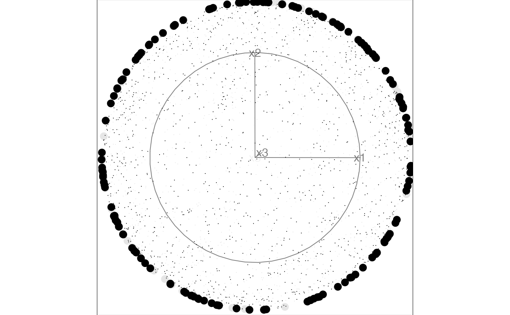
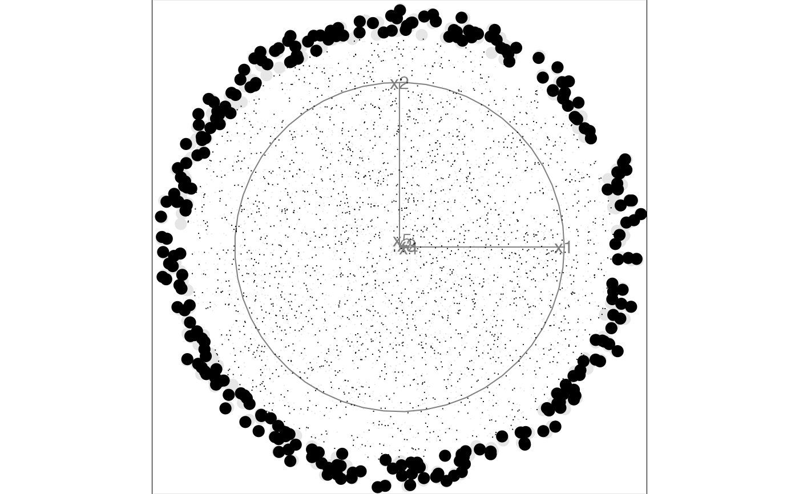
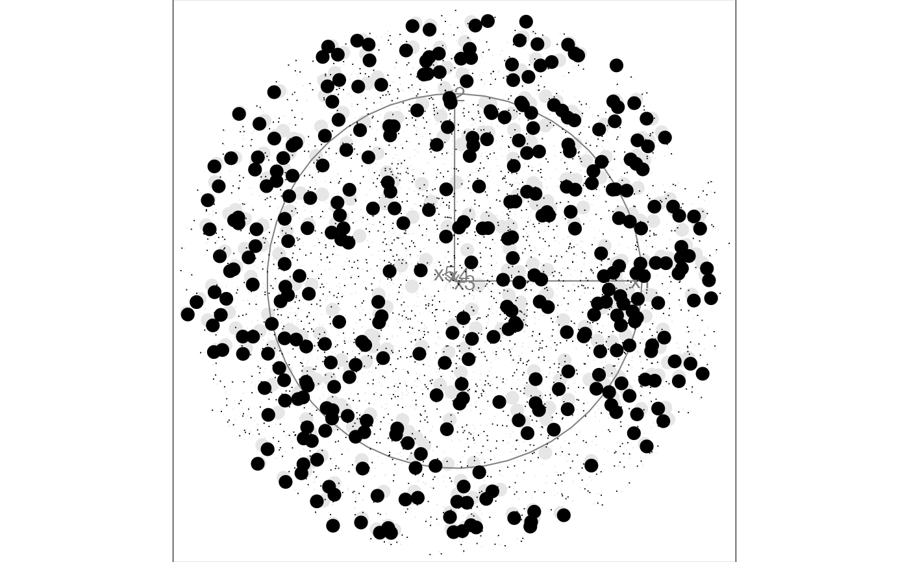

Animate a 2D tour path with a sliced scatterplot.
display_slice( center = TRUE, axes = "center", half_range = NULL, col = "black", pch_slice = 20, pch_other = 46, cex_slice = 2, cex_other = 1, v_rel = NULL, anchor = NULL, edges = NULL, edges.col = "black", ... ) animate_slice(data, tour_path = grand_tour(), rescale = TRUE, ...)
| center | if TRUE, centers projected data to (0,0). This pins the center of data cloud and make it easier to focus on the changing shape rather than position. |
|---|---|
| axes | position of the axes: center, bottomleft or off |
| half_range | half range to use when calculating limits of projected. If not set, defaults to maximum distance from origin to each row of data. |
| col | color to be plotted. Defaults to "black" |
| pch_slice | marker for plotting points inside the slice. Defaults to 20. |
| pch_other | marker for plotting points outside the slice. Defaults to 46. |
| cex_slice | size of the points inside the slice. Defaults to 2. |
| cex_other | size if the points outside the slice. Defaults to 1. |
| v_rel | relative volume of the slice. If not set, suggested value is caluclated and printed to the screen. |
| anchor | A vector specifying the reference point to anchor the slice. If NULL (default) the slice will be anchored at the data center. |
| edges | A two column integer matrix giving indices of ends of lines. |
| edges.col | colour of edges to be plotted, Defaults to "black. |
| ... | other arguments passed on to |
| data | matrix, or data frame containing numeric columns |
| tour_path | tour path generator, defaults to 2d grand tour |
| rescale | if true, rescale all variables to range [0,1]. |
# Generate samples on a 3d and 5d hollow sphere using the geozoo package sphere3 <- geozoo::sphere.hollow(3)$points sphere5 <- geozoo::sphere.hollow(5)$points # Columns need to be named before launching the tour colnames(sphere3) <- c("x1", "x2", "x3") colnames(sphere5) <- c("x1", "x2", "x3", "x4", "x5") # Animate with the slice display using the default parameters animate_slice(sphere3)#>#>animate_slice(sphere5)#>#># Animate with off-center anchoring anchor3 <- rep(0.7, 3) anchor5 <- rep(0.3, 5) animate_slice(sphere3, anchor = anchor3)#>#># Animate with thicker slice to capture more points in each view animate_slice(sphere5, anchor = anchor5, v_rel = 0.02)#>#>